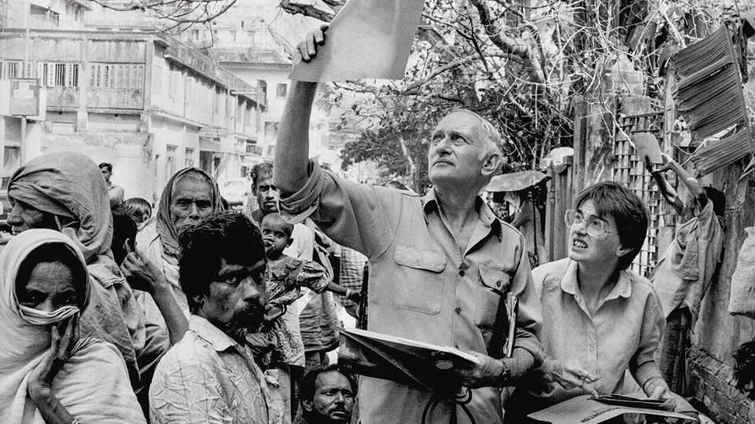

Jack Preger wanted to serve no one but the poor
The doctor who tended Kolkata’s destitute died on October 31st, aged 96

Nov 12th 2026
He had gone out to spread manure, that was all. As his tractor bumped over the stony ground of his farm in west Wales, Jack Preger didn’t have his mind on much except farming. Though he was a city boy from Manchester, a Jewish grocer’s son, he loved working the land. And from his piece of it, right on the coast, you could look across the sea to Ireland.
Then it happened. It was not a voice, exactly. It was more as if his skull had been laid open, and the words put in: “Become a doctor.” This was an order he knew he could not ignore. That very night he sat down and applied to a whole list of medical schools. Success was not likely; he had no science qualifications, had read PPE at Oxford and was 34, very old to be starting out. But the Royal College of Surgeons in Dublin took him. He emerged determined to help the poorest of the world.
And so it turned out. By the year 2000, when he was 70, his various clinics in the poorest parts of Kolkata were seeing more than 700 people a day. He had become “Dr Jack”, wandering along with his notepad and stethoscope, bending down to examine wounds and burns covered up with filthy blankets, smiling and joking in Bengali. It didn’t matter whether you were Hindu or Muslim, Dalit or Brahmin. All treatment was free. While his patients got pills or syrups and precious ID cards, their children were fed and taught in the free schools he had founded. He also treated the homeless where they lived: on railway platforms, in drainage pipes.
Chance had led him to focus on Kolkata. His first spell of doctoring had been in the 1970s in the refugee camps of Bangladesh, in fetid swamps teeming with orphans. He set up a 90-bed clinic there, but for any medical supplies he had to go to Kolkata; so when the Bangladeshi government threw him out in 1979, for exposing its links to a global adoption racket, West Bengal beckoned. He worked briefly with Mother Teresa, but then took off on his own. In 1980 he laid out his medicine bag on the pavement under the flyover to the Howrah bridge, and waited.
Immediately there was interest. The sick came, but so did medical professionals and occasional Westerners. With their help he progressed quickly to the long wall of St Thomas’s presbytery, on Middleton Row off Park Street. Still on the pavement, of course, but now his clinic was 30 metres long, shaded by tarpaulins, with a small room in the wall to store medicines and records. Eventually he was joined by scores of unpaid doctors, nurses and volunteers: not least the men who, at dawn, put up the bamboo poles for the tarpaulins, and the women who, at dusk, came with their brooms to brush every trace of the clinic away.
This vanishing was necessary, because he had no licence to practise medicine in India. His clinics were illegal. The government also assumed, because an American mission society had given him money, that he should have come in on a missionary visa. But he was no missionary. He had broken with Mother Teresa because she relied on prayer rather than soap and sterile needles. His enterprise was secular. For a decade he warred tirelessly with the authorities both local and national. It was not until he managed to register his own organisation, Calcutta Rescue, in 1991 that India stopped trying (though always failing) to expel him for good. The issue then became his right to take in foreign donations without handing over a chunk of them, which raged until the Supreme Court of India ruled that he could receive 1.5m rupees ($66,000), rake-off-free, every month. All that settled, he had to fight only local mafiosi, extortionists and property developers, one of whom got the Middleton Row clinic shut down. By then, though, finding sites was easier. And the Work had never stopped.
His aim was simple: to eliminate the gaps in care in government hospitals. He was often the first call for accidents caused by traffic, trains, machinery and cooking fires, though the hardest cases, needing operations, had to be sent elsewhere. Lepers, a priority, were given long-term holistic care; eye and skin diseases were quickly diagnosed and treated. TB was the most common serious illness, much of it drug-resistant, though he could seldom afford the new drugs to deal with that. He monitored and hoped.
His greatest success, he felt, was to set up the first free clinic for HIV in West Bengal. The condition was rife in the brothels of Nilmoni Mitra Street, where he lived in a single room hung with washing on the top floor of one of his schools. There was just space to put a chair, a table, a WC, a shower and a bed, and to swing a very small cat. At night he would hear the women screaming over their takings. Time then for a very small nip from a toothmug of his one luxury, Irish whiskey.
It was this room that he left, in 2019, to return to England. At 88, his strength was fading. He had to admit, too, that for all his labours the needs in Kolkata were not much reduced. But it was better to light one candle than to sit and curse the darkness. It was better to install arsenic filters in two village wells, as Calcutta Rescue did in Malda District, than to let the whole region go on drinking poisoned water. It was better, too, to give a handful of people second-line drugs for their TB, rather than give none. The fact that anyone had them at all would give other sufferers hope. It astonished him how much spirit and resilience the poor of Kolkata had.
As for why he had picked this work at all, he was still wondering. Sometimes, he reflected, you didn’t choose your life. Life chose you. He had wanted to be an Orthodox rabbi once, but after seeing his father die of a heart attack his faith fell away like an autumn leaf. On the farm he kept a beautiful old Bible on the kitchen table, and became Catholic for a while; but it didn’t last. In India he began to believe in karma and reincarnation. From the positive bits in many religions he wove his own. In public, he had none. But alongside “Become a doctor” another phrase had lodged: “Whatsoever you do to the least of my brethren, you do unto me.”■